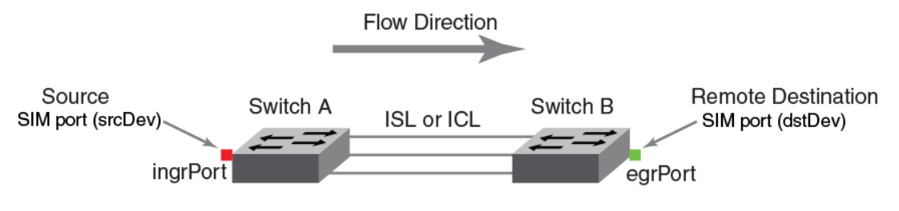

Brocade流量监视
Brocade Flow Vision
Flow Vision 是 Brocade 上的用来诊断 FC SAN 的工具，主要有三个功能
- 监测traffic flow
- 复制traffic flow用以分析bottleneck, bandwidth utilization, slow drain 之类
- 主动generate flow用以检测SAN的各种connectivity
关于 Flow
Flow在这里指的是具有相同特征的一系列frame，包含两方面信息：一是port，比如他们都要通过同一个ingress port 或 egress port，二是frame内容信息，比如他都具有相同的source ID，Des ID，LUN …
Flow Vision 操作
Flow Vision 监测的对象是 flow, 一般有下面操作
- 通过指定上面所说的这些参数，create flow
- 指定 flow 的属性，是 monitor IO, 是 copy 流量，还是 generate 流量
- Activate flow
- Show 出 collect 到的 data
Flow Monitor
Flow monitor 最为直观，主要是monitor flow上的各种statistics, 包括
- Frame statistics (比如 frame count & rate)
- Throughput statistics (byte/sec)
- I/O statistics (I/O count, IOPS)
e.g.
监测特定端口上SCSI frame 的数量
1 | flow --create scsicsflow -feature monitor -egrport 9 –frametype scsicheckstatus |
监测端到端（某个initiator - target）的throughput
1 | flow --create endtoendflow -feature monitor -ingrport 5 -srcdev 0x010500 -dstdev 0x040900 –bidir |
监测经过某条路径上的指定LUN的I/O
1 | flow –-create lunFlow1 -feature monitor –ingrport 5 -srcdev 0x010502 -dstdev 0x030700 -lun 4 |
Flow Generator
可在Fabric中配置多个sim port, 并在sim port之间模拟流量，从而不需要连接真实的设备。
1 | flow –-create flowCase1 –feature generator -ingrPort 1/1 –srcDev 0x040100 –dstDev 0x050200 |
Flow Mirror
把指定flow上的流量mirror一份出来，不影响原来的流量，相当于抓包。
e.g.
在fc device 0x040500 和 0x010200 之间的 通过port 1/5的双向流量mirror下来
1 | flow --create flow_slowdrain -feature mirror –egrport1/5 –dstdev 0x040500 –srcdev 0x010200 -bidir |
然后根据 SCSI 的 request/response 情况判断 slow drain device.